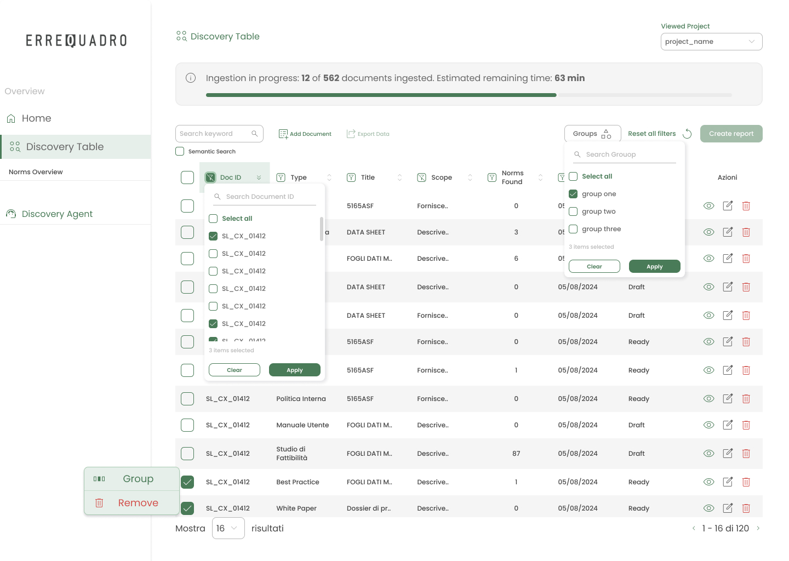
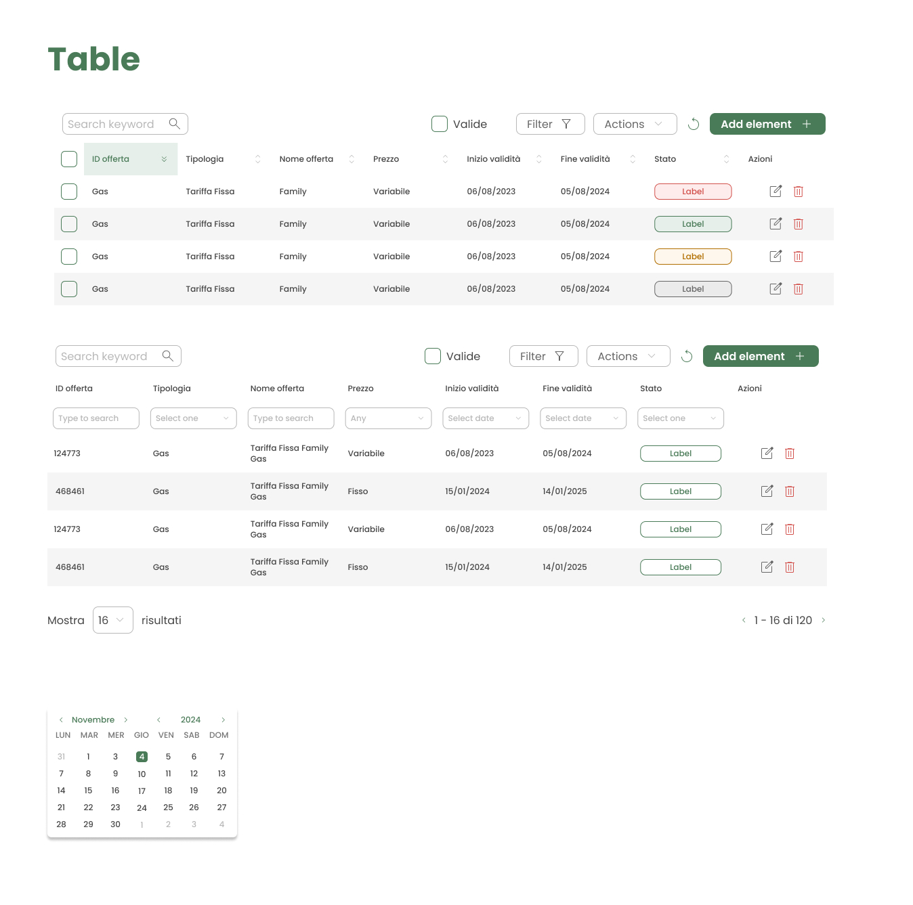
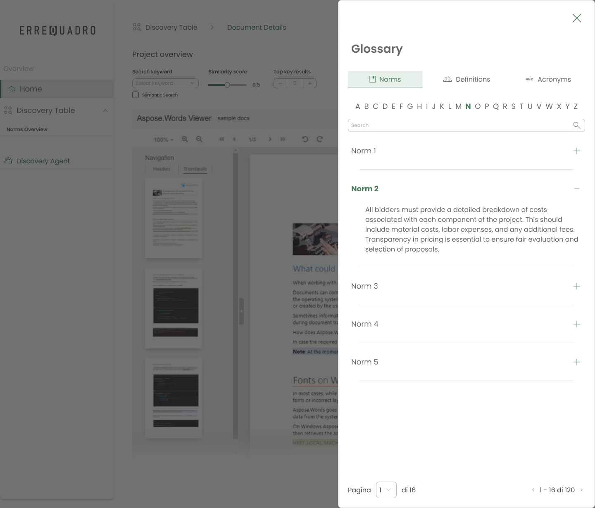
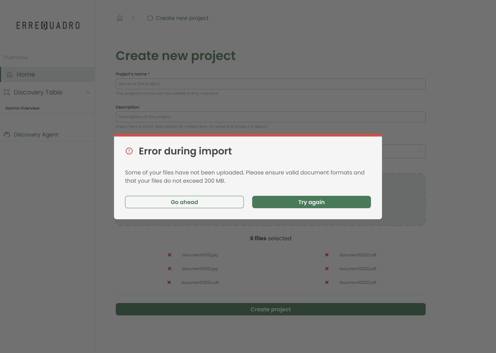

ErreQuadro
Simplifying complex enterprise workflows for professionals working with high-density operational data.
The project at a glance
The challenge
ErreQuadro is used daily by professionals who manage thousands of structured records across different business processes.
The main challenge wasn't adding new functionality, but making large amounts of information easier to navigate, understand and act upon without slowing users down.
Every interaction had to reduce cognitive effort while preserving the precision required by enterprise software.
Approach
Rather than redesigning isolated screens, the project focused on improving the entire interaction model. Information hierarchy, reusable interface patterns and clearer navigation were introduced to reduce friction across daily workflows while maintaining consistency throughout the platform.
Helping users navigate complex datasets
Large datasets quickly become overwhelming when every piece of information competes for attention. The interface was redesigned around progressive information hierarchy, allowing users to scan records faster while keeping advanced actions immediately available when needed.

Building a scalable design system
As the product expanded, maintaining consistency became increasingly difficult. Reusable components, shared interaction patterns and common visual rules were introduced to improve scalability, simplify future development and create a more predictable experience across the platform.

Reducing context switching
Enterprise users constantly move between related information. Instead of forcing them to leave their current workflow, contextual panels provide definitions and supporting content without interrupting the task, reducing unnecessary navigation and preserving focus.

Designing reliable system feedback
Operations such as imports, exports and bulk actions often involve long-running processes. Clear validation messages, loading states and actionable error feedback help users immediately understand what happened and how to recover without contacting support.

Collaboration & Accessibility
The project required close collaboration with Product Owners and developers throughout the implementation process. Design reviews, shared documentation and continuous feedback ensured technical feasibility while accessibility principles guided decisions around hierarchy, spacing and readability.
Impact
The redesign contributed to a more consistent enterprise experience by improving information hierarchy, reducing interaction complexity and establishing reusable design foundations for future features. Beyond the interface itself, the project reinforced the importance of balancing business requirements with everyday usability in complex B2B products.
Reflection
Designing ErreQuadro reinforced the idea that successful enterprise products are rarely about adding more features. They are about helping professionals complete complex tasks with confidence, clarity and as little friction as possible.